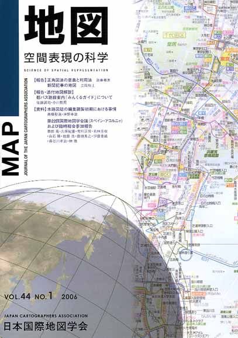
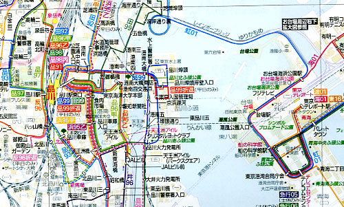

| 最 新 号 | バックナンバー | 添付地図目録 | 投 稿 規 程 |
Vol.44 No.1 （通巻１７３号） ２００６年
| 【報 告】 | 正角図法の意義と利用法 | 政春 尋志 |
| キーワード：正角図法、地図投影、メルカトル図法、方位、測地測量 | ||
| 新聞記事の地図 | 立岡 裕士 | |
| キーワード：ニュースの地図、新聞 | ||
| 【報告・添付地図解説】 | 都バス路線案内「みんくるガイド」について | 佐藤 誠司・小川 哲周 |
| キーワード：都営バス、路線図、デザイン | ||
| 【資 料】 | 水路図誌の編集調製初期における事情 | 高橋 堅造・沖野 幸雄 |
| キーワード：将来、寰瀛水路誌、春日紀行、海岸区、水路図誌、港湾、磁針偏差、柳楢悦 | ||
| 第22回国際地図学会議（スペイン・アコルニャ）および臨時総会参加報告 | 森田 喬・久保 紀重・有川 正俊・若林 芳樹・白石 陽・佐藤 浩・藤田 秀之・伊藤 香織・長谷川孝治・林 徹 | |
| キーワード：将来、地図学、地図学研連、18期、日本学術会議 | ||
| 【ニュース】 | 国土地理院が「数値地図25000（土地条件）」を刊行 | 太田 正孝 |
| 【ニュース・添付地図解説】 | 海上保安庁刊行航海用電子海図セル索引図（平成18年1月現在） | 上田 秀敏 |
| 【書評・紹介】 | 日本の地形・地盤デジタルマップ | 熊木 洋太 |
| 柏 その歴史・地理 | 高橋 伸夫 | |
| デラックス世界地図帳 | 畔田 豊年 | |
| 【平成17年度定期大会巡検報告】 | 「地図とリスク・マネージメント：危機の視覚化」に参加して | 山村 真己・太田 弘 |
| 【特別会員のページ】 | 日本総合システム | |
| 東京地図研究社 | ||
| 【学会記事】 | ||
| 【添付地図】 | 「みんくるガイド」 | |
| 海上保安庁刊行航海用電子海図セル索引図（平成18年1月現在） | ||
|
≪No.44 No.1 表紙≫ |
|
|  | |
|
|
|
|
≪No.44 No.1 添付地図−抜粋≫ |
|
| 
本図を許可なく複製・利用することを禁止します。 |
|